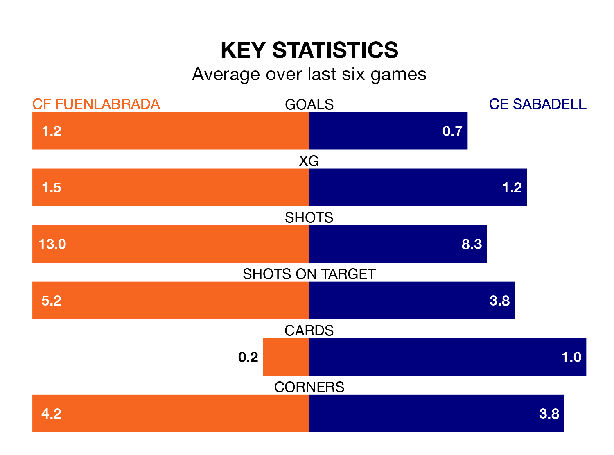

CF Fuenlabrada host CE Sabadell on Saturday at the Estadio Fernando Torres in Primera Division RFEF Group 1.
In their last league match, on March 23, Fuenlabrada lost to Celta de Vigo B 4-1 away, with their goal scored by Sergio Benito Crujera.
CE Sabadell also lost, 1-0 at home against Arenteiro.
CE Sabadell are 16th in the table after 29 games, of which they have won eight and drawn six, earning 30 points.
Fuenlabrada are five places ahead of the away team in 11th, with nine wins and 11 draws putting them on 38 points.
With 28 goals in 29 games so far this season, the hosts are scoring at the league's average rate with 1.0 goals per game. And they are conceding more than average, letting in 31 goals at a rate of 1.1 per game.
CE Sabadell are also average scorers, with 1.0 goal per game. They have conceded 1.4 goals per game.
Fuenlabrada are in mixed form in Primera Division RFEF Group 1, with two wins and two draws from their last six games.
And also with two wins and two draws over that period, CE Sabadell's form is identical – they have both taken eight points from 18.
In Fernando Ruiz Izaguirre, Fuenlabrada have one of the league's most on-form strikers so far this season. He has notched six goals in 24 appearances, to sit ninth in the scoring charts.
The visitors' top scorers, with four goals each, are José Manuel Martínez Bel and Antonio Moyano Carrasquilla.
Updated: 12:39 (UTC), 26/03/24